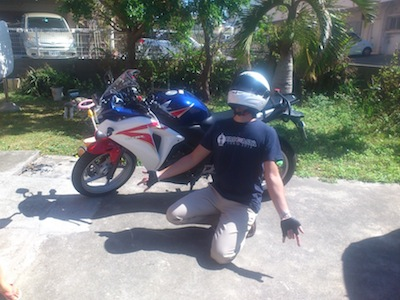

Your browser doesn't support the features required by impress.js, so you are presented with a simplified version of this presentation.
For the best experience please use the latest Chrome or Safari browser. Firefox 10 (to be released soon) will also handle it.
Perl Mongers Group
2012/10/27
さいとう まさあき
masakyst
自己紹介
- 斉藤 雅昭(さいとう まさあき)
- Twitter @masakyst
- ブリュー合同会社
- 読谷村
- Perl, JavaScriptが好き
Q
Perl使ってる人
Perl Mongers (Group
地域毎のPerlユーザグループの集合体です。
ニューヨークPerl Mongersとして1998年に最初のPerlグループとしてbrian d foyによって設立された。2番目のPerl MongersグループはChris Nandorによってボストンで開始された。
1998年には2回目のOReillyのPerl Conferenceで100を超えるPerlユーザーグループを作成する援助がなされた。2005年には、178を超えるPerlのユーザーグループが記録されている。
2012年10月現在は、257グループ。
日本の Perl Mongers Group
- Hokkaido.pm (北海道
- Kushiro.pm (北海道
- Sendai.pm (宮城県
- Niigata.pm (新潟県
- Shibuya.pm (東京都
- Tokyo.pm (東京都
- Kamakura.pm (神奈川県
- Yokohama.pm (神奈川県
- Nagoya.pm (愛知県
- Kyoto.pm (京都府
- Kansai.pm (大阪府
- Fukuoka.pm (福岡県
More!
- Hachioji.pm (by uzulla
- Chiba.pm (by kaztr
- Kokusaitenjijoumae.pm (by maka2_donzoko
- Perl Beginners (by ytnobody
- Perl入学式 (by papix
- Urasoe.pm (by m_zuma
New...?
- Tachikawa.pm (by akira1908jp
- Okinawa.pm (by masakyst
＿人人人人人人人人人人人＿
＞ 突然のPM設立告知！ ＜
￣Y^Y^Y^Y^Y^Y^Y^Y^Y￣
Yomitan.pm
http://yomitanpm.org/
- 沖縄中部を中心としたPerlユーザの集まり！
- Perlに興味がある方ならどなたでも参加okです！
- 飲み会を開いてPerlやその他の技術について語り合う！
- tech talkと題した勉強会を不定期で開催！
Contact
twitter
@yomitanpm
今後の目標
- まず第一回やらなきゃ
- Urasoe.pmさんと合併して、Okinawa.pmにするか？
- もしくは Urasoe.pm, Yomitan.pm, Nago.pm(まだ無い)の南部/中部/北部合同で、YAPC::Okinawa がいつか開催できれば、という壮大な夢
最後に
バイクツーリング仲間も募集しています！

ご清聴
ありがとうございました